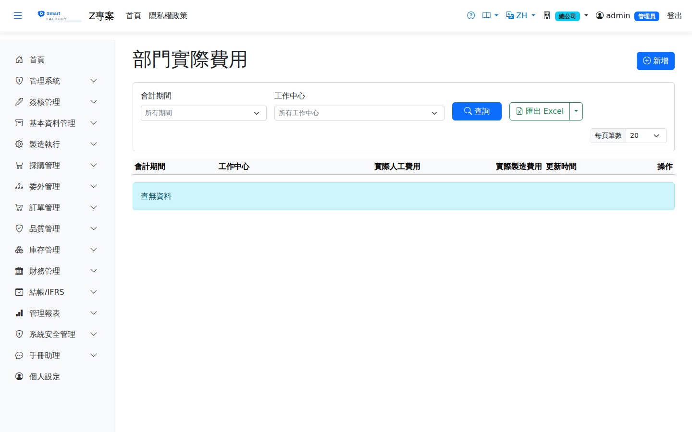

部門實際費用Department Actual Cost
路由：/DepartmentActualCost | 部門月實際費用輸入（實際費率重估基礎）Route: /DepartmentActualCost | Entering monthly departmental actual costs (the basis of the actual rate re-estimate)
輸入各部門當月實際發生費用（人工/製費），系統以「實際費用 ÷ 實際報工工時」計算實際費率，月末重估回刷已完工工單與在製品成本並產生調整分錄（Preliminary → Final）。本畫面存的資料會自動帶進月結作業步驟 4 的輸入框。Enter each department's actual cost for the month (labour and overhead); the system works out the actual rate as actual cost ÷ actual reported hours, and the month-end re-estimate restates the cost of completed work orders and of WIP and creates the adjusting entries (preliminary → final). What you save here is pre-filled into the input box of step 4 on the Month-End Closing screen.

部門實際費用畫面截圖（示意，實際欄位/資料依權限與查詢條件而異）Departmental actual cost screenshot (illustrative; actual fields and data vary by permission and query criteria)
查詢Search
1
查詢列輸入條件後點「查詢」；欄位標題可點擊排序，清單下方有分頁導航。Enter your criteria on the query bar and click "Search"; column headers can be clicked to sort, and the paging controls sit below the list.
作業流程Process
輸入與重估Entry and re-estimation
1
月結時點「新增」輸入各部門實際費用金額。At month end, click "Add" and enter the actual cost of each department.
2
到月結作業步驟 4 按「執行批次」做實際費率重估：系統回刷當月工單成本與 WIP 快照並產生調整分錄。本期有報工或換線工時的工作中心都要有一筆費用，缺漏的會被擋下並列出；確實沒有費用請輸入 0。On the Month-End Closing screen, click "Run Batch" on step 4 to run the actual rate re-estimate: the system restates the month's work order costs and the WIP snapshot and creates the adjusting entries. Every work center with labour or setup hours this period needs a cost line; any that are missing are rejected and listed — enter 0 if a work center genuinely had no cost.
欄位說明Field reference
查詢條件Query criteria
| 條件Condition | 說明Guide |
|---|---|
| 會計期間Accounting period | 要維護／查詢的期間（YYYYMM）The period (YYYYMM) to maintain or query |
| 工作中心Work Center | 費用歸屬的工作中心（部門）Work center (department) the cost belongs to |
| 欄位Field | 說明Guide |
|---|---|
| 會計期間Accounting period | 此筆實際費用所屬期間，與工作中心合併為唯一鍵Period this actual cost belongs to; together with the work center it forms the unique key |
| 工作中心Work Center | 費用歸屬的工作中心；一個期間內同一工作中心只能有一筆Work center the cost belongs to; only one row per work center per period |
| 實際人工費用Actual Labor Cost | 該期間該工作中心實際發生的直接人工費用總額（由會計實地歸集後輸入）Total direct labour cost actually incurred at the work center in the period (collected by accounting and entered here) |
| 實際製造費用Actual manufacturing overhead | 該期間該工作中心實際發生的製造費用總額（水電、折舊、間接人工等）Total manufacturing overhead actually incurred at the work center in the period (utilities, depreciation, indirect labour …) |
| 更新時間Updated At | 最後一次修改的時間戳，系統自動寫入Timestamp of the last change, filled in by the system |